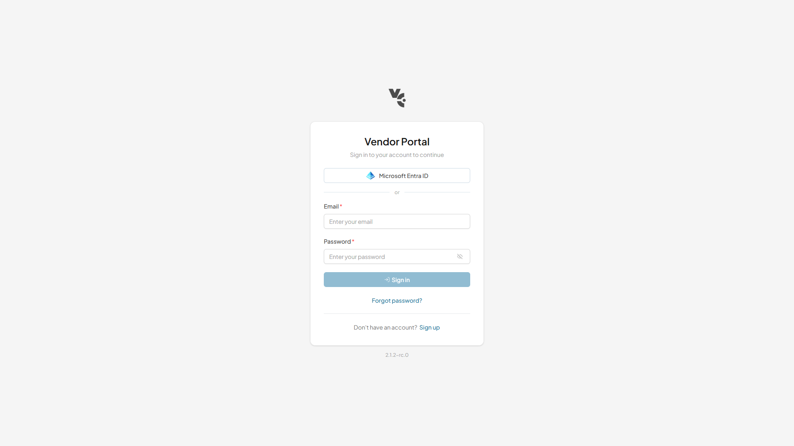

<body>, restarting Tab at the top of the documentAfter Log Out, document.activeElement was <body> and the accessibility tree carried no focused node, so the next Tab started at the document’s first element and the user re-traversed the whole login page. A screen-reader user also got no announcement of the new context.
Why VCST-5670’s fix could not cover it: that ticket’s route watcher repairs focus to <main class="vc-app__workspace">, which is rendered v-if="isAuthenticated". Logging out unmounts it, so the watcher’s target resolved to null and focusIfLoose correctly declined rather than focusing a detached node. The repair was structurally unavailable on this one route change — not a regression of that fix.
PR #343 gives the unauthenticated layout its own focus target: vc-auth-layout’s root <main> gained tabindex="-1" and an onMounted call to focusIfLoose — the same repair the workspace and each blade already perform for their own context.
vc-auth-layout.vue reverted to tag v2.5.0 against its fix-era test file — 2 failed / 16 passed.
× takes focus when it mounts with
focus loose
→ expected <body><div data-v-app>…</div></body>
to be <main class="vc-auth-layout">…</main>
× is focusable without being a tab stop
→ expected null to be '-1'
The first assertion is the reported defect stated exactly: focus on the body where the layout root was expected.
Same test file on the fixed code — GREEN 3/3. Live Log Out on the deployed portal — 3/3.
a11y tree, after Log Out: main "vc-auth-layout" [active] Shift+Tab from the first control left the page entirely rather than landing on `main` — so tabindex="-1" adds no stray tab stop. Full framework suite, all three fixes: 414 files / 4112 tests / 0 failures
| # | Check | Result |
|---|---|---|
| 1–3 | Log Out STR ×3 — layout root reads [active], not <body> | PASS 3/3 |
| 4a | Tab from the restored root reaches the first control in the form | UNDECIDABLE |
| 4b | Root is focusable but not a tab stop — no stray stop added | PASS |
| 5 | Breadth — Forgot password also repairs on arrival | PASS |
| 6 | focusIfLoose repairs, does not steal from a deliberate focus | PASS |
| 7 | VCST-5670 not regressed — authenticated repair still works | PASS |
| 8 | No new console errors | 0 errors |
vc-auth-layout root is the document’s first element, so its first tabbable descendant (“Microsoft Entra ID”) is also the document’s first tab stop. One Tab therefore reaches the same node whether focus started on the root or on <body>, so the probe cannot discriminate here. The load-bearing evidence is the calibrated [active] marker plus item 4b, which is measurable.Item 6 was measurable without eval, from both sides. With Sign in deliberately focused, the failed-login re-render (field cleared, alert added) left focus on the button — the root did not reclaim it. On remount, with focus genuinely loose, it did. That is repair-not-dictator behaviour demonstrated in both directions rather than assumed.
PR #343 claims coverage of every page built on this layout. Two were exercised; three were not, and are recorded as NOT-RUN rather than passed.
Page on vc-auth-layout | Status | Basis |
|---|---|---|
| Sign-in | VERIFIED | Log Out STR ×3 |
| Forgot password | VERIFIED | focus repaired on arrival |
| Reset password | NOT-RUN | needs a provisioned account absent on this env |
| Invitation | NOT-RUN | needs a provisioned account absent on this env |
| Forced password change | NOT-RUN | needs a provisioned account absent on this env |
Mechanical support, short of running them: the layout root’s element reference changed on each auth route change (e1868 → e1929 → e1953), proving the layout genuinely remounts per page — so onMounted → focusIfLoose fires per page. That makes the breadth claim plausible by construction, but it is not a substitute for exercising the three remaining pages.
| Step | Observation |
|---|---|
| Ancestry | fix → rc gitHead cb6379d: ahead_by 9, behind_by 0 |
| Served constant | build 55512 declares framework 2.6.0-rc.0 |
| Compiled marker | m("main",{ref_key:"rootRef",ref:a,class:"vc-auth-layout",tabindex:"-1" |
| Marker proven new | tabindex: 0 occurrences in vc-auth-layout.vue at v2.5.0, 1 at main |

vc-auth-layout container holds focus, where pre-fix the accessibility tree carried no focused node at all and the next Tab restarted at the document’s first element.These are shared with the VCST-5806 run — one finding each, not two.
The Password field is required instead of an invalid-credentials message. Reproducible 3/3, but only exercised with a nonexistent account — confirm against a real account with a wrong password before filing.Cannot set context data: no blade id available, once per sign-in/route event.